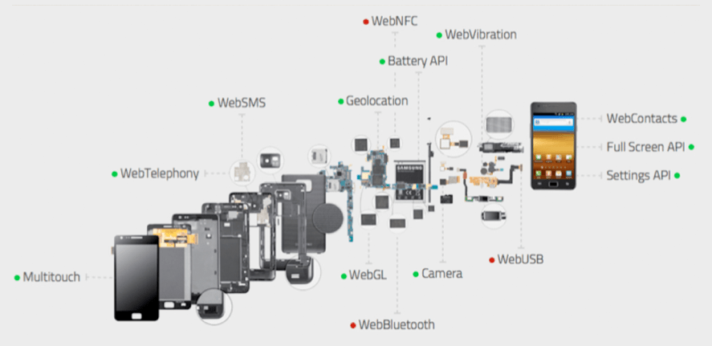

Your needs change from one moment to the next. Firefox OS does the same. Firefox OS is a new, free operating system for mobile devices, built by Mozilla - the makers of the popular Firefox web browser. It is an open platform that fosters greater participation in the value chain from developers to manufacturers to customers.
Firefox OS breaks from the typical proprietary OS in modern devices, using HTML5, css, and javascript to allow developers to deliver powerful apps that aren’t tied to the OS platform. It’s a comprehensive standalone operating system for the mobile web. This allows:
Firefox is developing valuable relationships with carriers, manufacturers, developers, and technology providers to deliver the powerful Firefox OS platform, including Telefonica, Sprint, T-Mobile, LG, Sony and Qualcomm Technologies.
Devices include the ZTE Open, the Alcatel One Touch Fire, each including a 3.5” screen, 1GHz processor, 512 MB of storage (plus a 2 GB SD card) and a 2.3 MP camera. Additional Snapdragon phones will be coming from other manufacturers in Latin America, Europe, and other worldwide markets.
Firefox OS is an open alternative to proprietary systems like iOS and Android. Built entirely around HTML5, css, and javascript, Firefox OS can reduce the investment from developers, allowing them to develop more innovative apps and develop better customer loyalty and relationships.
Firefox OS uniquely anticipates your needs, adapts to every situation and instantly delivers the information you want. That includes popular, big name apps, but also local content that means the most to you and your life.
Firefox OS is the only operating system with Adaptive App Search. While every other phone today is static, giving you the exact same apps each time you turn it on, Firefox OS is always changing to offer exactly the apps you need at any moment in your life.
Type a word or subject you're interested in
Find exactly what you want – and more
Get instant access or save apps to your phone
Discover more apps on the Firefox Marketplace
Firefox Marketplace is the kind of app store customers expect, where they can get great apps for entertainment, productivity, social networking, and more. However, unlike other systems, Firefox Marketplace is not the only point of distribution for apps – apps can be distributed from anywhere online, by any developer – from carriers to movie makers to game developers. This allows a direct link to customers. From social to photography, music to maps - with Firefox OS, the web is the app store.
Firefox OS is packed with the features you want, and fits your life perfectly so you can fit in with the world around you. It scales from feature phone to smartphones, utilizing high performance standards-based API’s and open source software components. Inside, tight integration with Qualcomm® CPU, GPU, & MM accelerators meet or exceed the native app experience.
Image attribution: http://arewemobileyet.com
The open standards perspective of Firefox OS gives operators some clear advantages to working with the “walled gardens” of iOS, Android, and Blackberry. Carriers can create value-add services to customers, delivery rich, powerful apps directly to customers, and have more ownership over the customer experience.
Operators will benefit from higher control over the mobile ecosystem and consequently will have the opportunity to address specific customers. – Franco Bernabe, Telecom Italia CEO
This is a major step to bring balance back to the telco sector. The smartphone market is currently working backwards. [Customers are] not able to take an application from one platform to another. Duopolies are not beneficial for any industry. – Cesar Alierta, CEO, Telefonica
Suddenly we have something which is a bit more flexible. – Jon Fredrick Baksaas, CEO, Telenor
This is the beginning of the end of walled gardens. – Marco Quatorze, CMO, America Movil
Are you sure you want to exit this learning module?
We encourage you to explore this module thoroughly, revisiting those areas that may require a deeper understanding for you. The more you know, the more results you'll see on the sales floor! You can choose to exit to the assessment at any time.